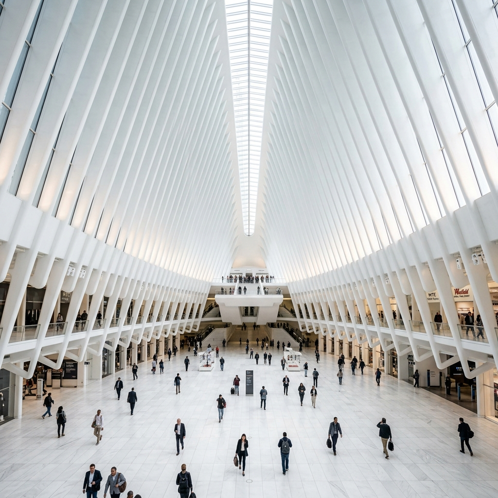

To look at the New York City skyline is to witness a century of competition. It’s a physical manifestation of the word "more"—more height, more light, more glass, more ambition. But the most interesting stories are often told at the intersections where the old world meets the new.

The High Line: The City’s New Lungs
Walking the High Line is like being in a futuristic linear garden that floats thirty feet above the chaos of the Meatpacking District.
📍 Teleport to Gansevoort StThe Skeletal Splendor: The Oculus
The Oculus, designed by Santiago Calatrava, is a masterclass in skeletal grace at the World Trade Center site.
📍 Teleport to Church StCelestial Design: Grand Central
Be sure to look up at the celestial ceiling in the main concourse—a 1913 masterpiece of Beaux-Arts design.
📍 Teleport to 89 E 42nd St